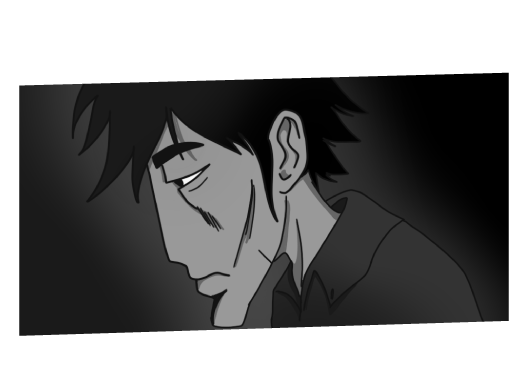

Un joven afortunado por distintas
circunstancias de la vida, han hecho
posible que tenga más privilegios que los
demás. Es un joven muy activo, le gusta
estar presente en las redes y tener
muchos amigos, de vez en cuando le
duele ver lo que pasa en el mundo, pero
intenta mantener su cabeza ocupada en
otros asuntos. La soledad lo acompaña y
algunas veces le da malos consejos.
Es un joven de mediana edad, de tal vez unos
26 o 28 años, de algún barrio oscuro de la
ciudad de Bogotá, Colombia, él es temerario,
incasable, poderoso, pero con mucha tristeza
en su corazón. Pasa sus días en las calles de
la ciudad. De norte a sur buscando trabajo,
dinero y de vez en cuando buscando su vida.



Mira este proceso ilustrado
Daryl Hermann Zambrano
Todos los derechos reservados
2020